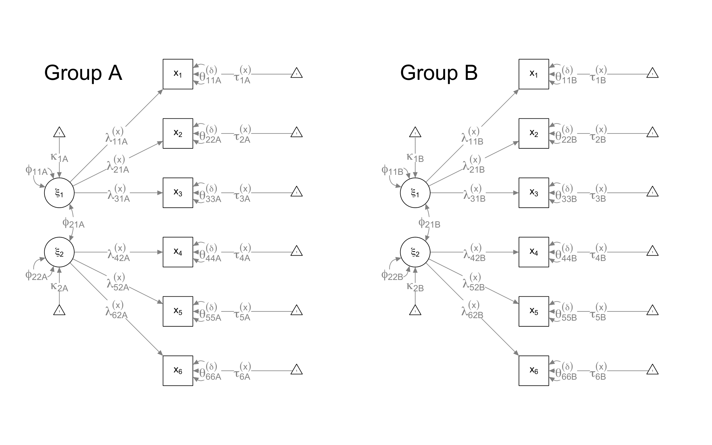
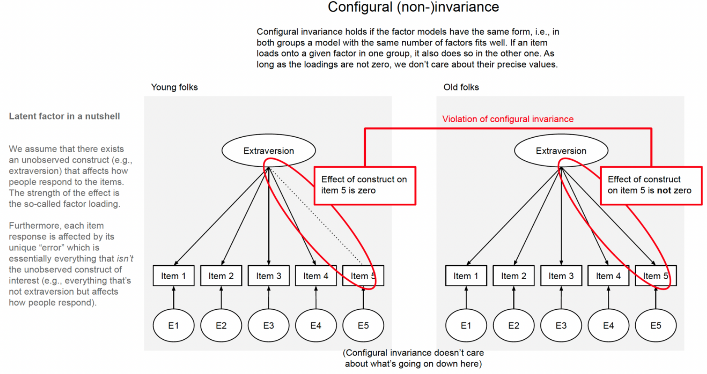
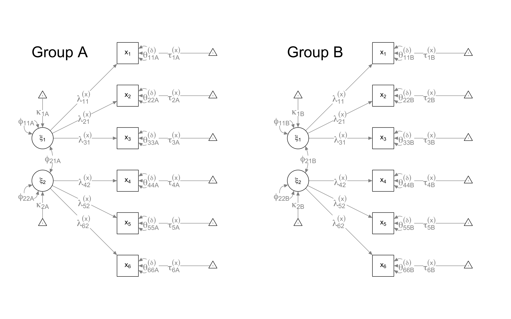
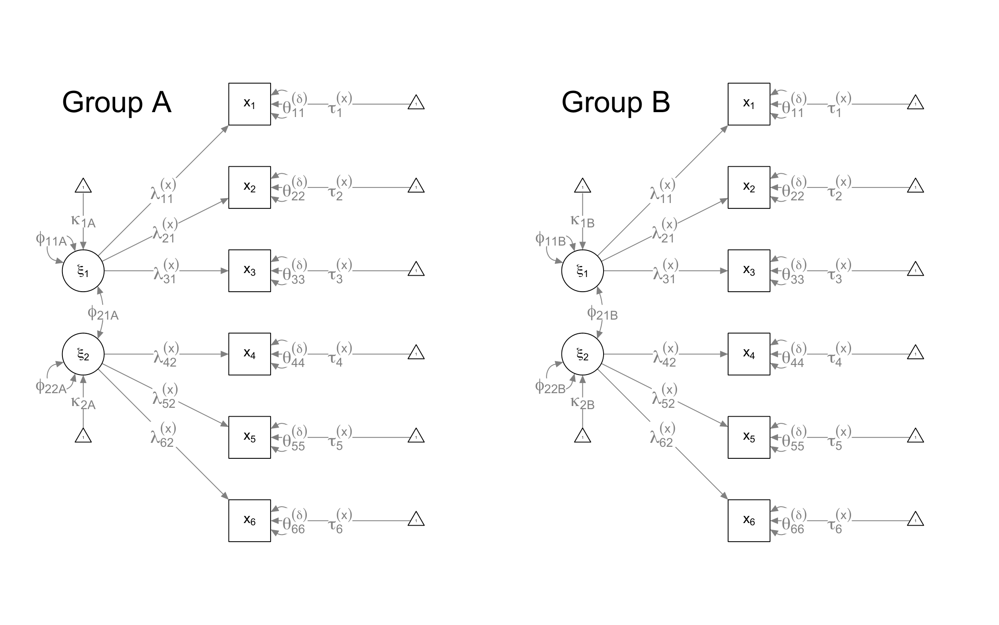
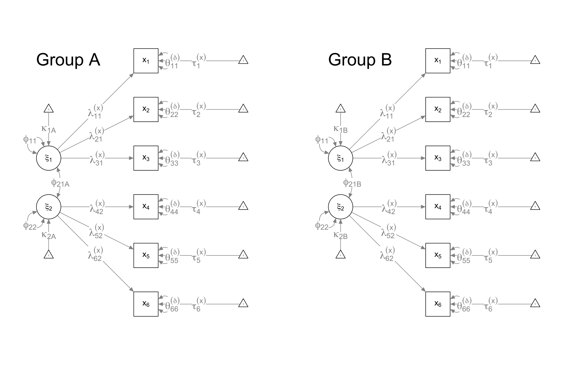
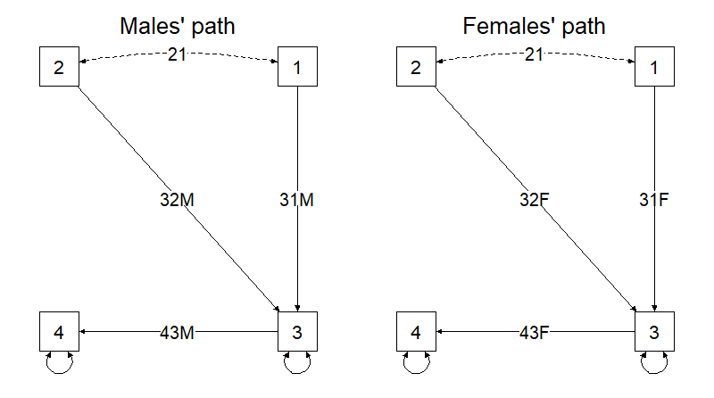

All the next slides are inspired in large part from the following blog post
Step 0: Separate models for each group
Step 1: Configural invariance

Step 1: Configural (non-)invariance
Configural invariance means that the “form” of the models is the same in the groups of interest. Form entails both the number of latent variables and whether the loadings are non-zero to begin with.

Step 2: Metric invariance

Step 2: Metric (non-)invariance
Metric invariance means that for each item, the loading of the factor on the item is the same in the two groups (or, again more precisely, that we cannot reject the hypothesis that the loadings are the same).
Step 2: Metric (non-)invariance
The source of group differences does not come from the latent variable!
Step 3: Scalar invariance
Step 3: Scalar invariance
Scalar invariance means that for each item, the intercept is the same. This means that group differences in the item responses are fully accounted for by group differences in the latent construct.
Step 4: Invariance of observed residual variances
Residual invariance means that for each item, the residual variance—the variance of the ominous E pointing into the items—is the same. We can again phrase this statistically: if we regressed the item scores on the factor, then the variance of the remaining residual would be the same in the groups (i.e., there would be homoscedasticity).
Step 4: Invariance of observed residual variances

The thing about the residual is that it captures everything that’s not explained in the model, and explaining changes in the amount of unexplained things seems a bit futile. Residual invariance is often not tested because it’s not necessary for latent mean comparisons. It’s a bit of an anticlimactic level to end on.
Step 5: Invariance of latent variances

Step 6: Invariance of latent covariances
Step 7: Invariance of latent means
Evaluation: global comparison
Common ingredients:
Model fit in the more constrained model (χ², RMSEA, CFI/TLI, SRMR)
Change in fit vs less constrained model:
Δχ² (highly N-sensitive)
ΔCFI (often used)
ΔRMSEA / ΔSRMR (sometimes used)
ΔBIC (information criteria)
A marked worsening of fit indices indicates that the considered invariance model is too restrictive and thus must be rejected.
Warning
make a comprehensive evaluation based on different fit indices, rather than on a single fit criterion.
Practical comparison rules
Let MOD-A be a reference model and MOD-B a more restrictive model.
Δχ² = χ²(B) − χ²(A) (N-sensitive; use with caution)
ΔCFI = CFI(B) − CFI(A)
heuristic: accept if ΔCFI > −.01
ΔBIC = BIC(B) − BIC(A)
negative values favor B
Warning
Pitfall: with robust estimators (e.g., MLR/WLSMV), the χ² difference test is not always the plain anova() test.
Partial invariance (what it is)
When invariance is untenable at some level (metric/scalar/strict), you can allow some parameters to differ:
Through the option group.equal , it is possible to constrain groups of parameters to be equal across groups in order to assess increasingly restrictive invariance hypotheses:
Constrained parameters
In R
Factor loadings
loadings
Intercepts of manifest variables
intercepts
Residual variances of manifest variables
residuals
Residual covariances of manifest variables
residual.covariances
Residual variances of latent variables
lv.variances
Residual covariances of latent variable
lv.covariances
Intercepts/means of latent variables
means
All regression coefficients
regressions
Thresholds
thresholds
Partial invariance in lavaan
group.partial allows selected parameters to differ.
Example: After the inspection of MI, we decided to estimate a model of partial metric invariance in which the loading of the item x5 is free to vary between groups::
m_metr_p <-cfa(m, data = d, group ="Group",group.equal ="loadings",group.partial ="f2 =~ x5")fitMeasures(m_metr_p, fi)
'data.frame': 300 obs. of 10 variables:
$ id : int 1 2 3 4 5 6 7 8 9 10 ...
$ diagnosis: Factor w/ 2 levels "manic","norming": 1 1 1 1 1 1 1 1 1 1 ...
$ Info : num 8.95 11.94 5.8 14.69 6 ...
$ Sim : num 9.34 9.93 6.64 17.72 6.56 ...
$ Vocab : num 12.39 4.57 6.03 13.21 7.83 ...
$ Comp : num 11.61 8.86 5.03 13.38 5.77 ...
$ PicComp : num 11.15 4.95 8.02 11.54 8.84 ...
$ PicArr : num 15.7 5.46 7.65 12.06 5.39 ...
$ BlkDsgn : num 11.45 3.43 9.28 10.46 7.39 ...
$ ObjAsmb : num 15.54 3.8 8.63 14.38 9.92 ...
Important
SEM work with variance-covariance matrices. For this reason, it is sufficient to find it in the original articles to use their “data”! The data we will use have been generated based on the parameters provided in the article, modifying the sample size.
Model
model <-"gc =~ Info + Sim + Vocab + Compgv =~ PicComp + PicArr + BlkDsgn + ObjAsmb"
Step 0 — Separate models
m_man <-cfa(model, data = dmg[dmg$diagnosis =="manic", ])m_nor <-cfa(model, data = dmg[dmg$diagnosis =="norming", ])fitMeasures(m_man, c("chisq","df","rmsea","cfi","tli"))
# Example: free the intercept of Simm_scal2_p <-cfa(model, data = dmg, group ="diagnosis",group.equal =c("loadings","intercepts"),group.partial ="Sim ~ 1")fitMeasures(m_scal2_p, c("chisq","df","rmsea","cfi","tli"))
Latent mean comparisons can be more defensible under partial scalar, but interpret non-invariant indicators substantively
Which item behaves differently across groups, and what could it reflect?
Invariance of Residuals of observed variables(1)
# Note: parameter "Sim~1" remains freem.rvo=cfa(model,dmg,group="diagnosis",group.equal=c("loadings","intercepts","residuals"),group.partial="Sim~1") #Note that this is still here# Inspection of fit indicesfitMeasures(m.rvo,c("chisq","df","rmsea","cfi","nnfi"))
# (... see complete output )# From a first analysis, we can see that# the residuals of variables “Comp” and “PicComp”# have Modification indices that are# particularly high, so let's free them
Invariance of Residuals of observed variables (1)
m.rvo.P=cfa(model,dmg,group="diagnosis",group.equal=c("loadings","intercepts","residuals"),group.partial=c("Sim~1","PicComp~~PicComp","Comp~~Comp"))# Fit indicesfitMeasures(m.rvo.P,c("chisq","df","rmsea","cfi","nnfi"))
# Paartial Invariance of Residuals of observed variables is satisfactory.# Question: What can we say about overall# Measurement Invariance of the baseline theoretical model?
Invariance of Variance of latent variables (1)
m.vvl=cfa(model,dmg,group="diagnosis",group.equal=c("loadings","intercepts","residuals","lv.variances"),group.partial=c("Sim~1","PicComp~~PicComp","Comp~~Comp"))# Fit indicesfitMeasures(m.vvl,c("chisq","df","rmsea","cfi","nnfi"))
m.cvl=cfa(model,dmg,group="diagnosis",group.equal=c("loadings","intercepts" ,"residuals","lv.variances","lv.covariances"),group.partial=c("Sim~1","PicComp~~PicComp","Comp~~Comp"))# Fit indicesfitMeasures(m.cvl,c("chisq","df","rmsea","cfi","nnfi"))
# last stepm.med=cfa(model,dmg,group="diagnosis",group.equal=c("loadings","intercepts" ,"residuals","lv.variances","lv.covariances","means"),group.partial=c("Sim~1","PicComp~~PicComp","Comp~~Comp"))# Fit indicesfitMeasures(m.med,c("chisq","df","rmsea","cfi","nnfi"))
# This last model is also satisfactory# ANY COMMENTS?
Summing up
Models
npar
df
chisq
cfi
tli
nnfi
agfi
srmr
rmsea
bic
aic
Manics
17
19
54.05
0.95
0.92
0.92
0.84
0.05
0.11
5590.65
5539.47
Norming
17
19
18.15
1
1
1
0.94
0.03
0
5718.64
5667.46
Configural
50
38
72.2
0.97
0.96
0.96
0.98
0.04
0.08
11424.11
11238.93
Metric
44
44
88.15
0.96
0.95
0.95
0.98
0.06
0.08
11405.84
11242.88
Scalar
38
50
144.67
0.92
0.91
0.91
0.97
0.08
0.11
11428.13
11287.39
Scalar Partial
39
49
100.17
0.96
0.95
0.95
0.98
0.07
0.08
11389.34
11244.9
Residual Variances
31
57
127.34
0.94
0.94
0.94
0.98
0.08
0.09
11370.88
11256.07
Residual Variances Partial
33
55
102.42
0.96
0.96
0.96
0.98
0.07
0.08
11357.37
11235.14
Latent Variances
31
57
105.83
0.96
0.96
0.96
0.98
0.09
0.08
11349.36
11234.55
Latent Covariances
30
58
106.41
0.96
0.96
0.96
0.98
0.09
0.07
11344.25
11233.13
Latent Means
28
60
110.93
0.96
0.96
0.96
0.98
0.09
0.08
11337.36
11233.66
Structural invariance
Test of multigroup invariance can also be used to compare differences in the regression coefficients of two or more groups (interactions).

Exercise (connect to the lab)
Important
Try it (15–25 min)
1. Fit configural, metric, scalar on the toy dataset d.
2. Decide whether scalar is acceptable using ΔCFI + theory.
3. If scalar fails, free one intercept using group.partial.
4. Write 3–4 sentences: what is comparable now, and what is not?
Lab link placeholder: add a direct link to the invariance lab once created (e.g., ../labs/lab04_invariance.qmd).
Take-home: 3 things
Invariance is about comparability
Scalar (full/partial) is the key for latent mean comparisons.
Partial invariance is legitimate, but must be disciplined + theory-driven.
Further reading (extras)
Partial invariance strategies and interpretability
Invariance with ordinal indicators (thresholds first)